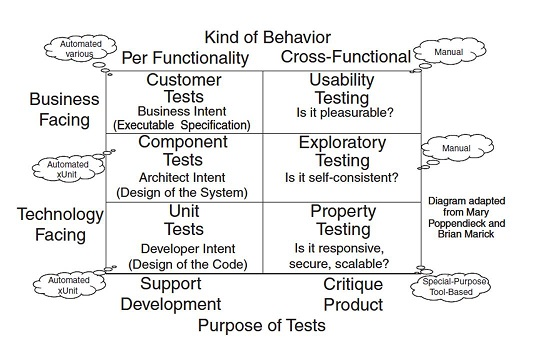
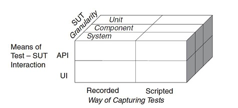
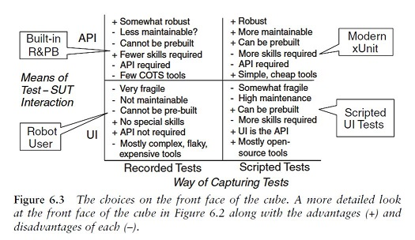
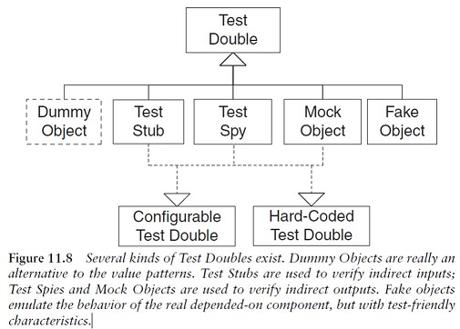
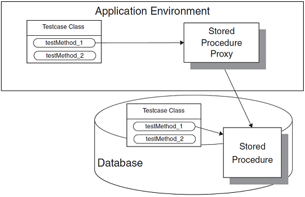

Xunit Test Patterns¶
Xunit Test Pattern is a fantastic book which shares the experience and good practice to write tests.
Contents
- Xunit Test Patterns
- Test Introduction
- Anti-Patterns
- Patterns
- Recorded Test
- Scripted Test
- Data-Driven Test
- Test Automation Framework
- Minimal Fixture
- Standard Fixture
- Fresh Fixture
- Shared Fixture
- Back Door Manipulation
- Layer Test
- Test Method
- Four-Phase Test
- Assertion Method
- Assertion Message
- Testcase Class
- Test Runner
- Testcase Object
- Test Suite Object
- Test Discovery
- Test Enumeration
- Test Selection
- In-line Setup
- Delegated Setup
- Creation Method
- Implicit Setup
- Prebuilt Fixture
- Lazy Setup
- Suite Fixture Setup
- Setup Decorator
- Chained Tests
- State Verification
- Behavior Verification
- Custom Assertion
- Delta Assertion
- Guard Assertion
- Unfinished Test Assertion
- Garbage-Collected Teardown
- Automated Teardown
- In-line Teardown
- Implicit Teardown
- Test Double
- Test Stub
- Test Spy
- Mock Object
- Fake Object
- Configurable Test Double
- Hard-Coded Test Double
- Test-Specific Subclass
- Named Test Suite
- Test Utility Method
- Parameterized Test
- Testcase Class per Class
- Testcase Class per Feature
- Testcase Superclass
- Test Helper
- Database Sandbox
- Stored Procedure Test
- Table Truncation Teardown
- Transaction Rollback Teardown
- Dependency Injection
- Dependency Lookup
- Humble Object
- Test Hook
- Literal Value
- Derived Value
- Generated Value
- Dummy Object
- Summary
Test Introduction¶
Easy to run tests¶
What makes tests easy to run? Four specific goals answer this question:
- They must be Fully Automated Tests so they can be run without any effort.
- They must be Self-Checking Tests so they can detect and report any errors without manual inspection.
- They must be Repeatable Tests so they can be run multiple times with the same result.
- Ideally, each test should be an Independent Test that can be run by itself.
Our tests should be small and test one thing at a time.
The major exception to the mandate to keep Test Methods short occurs with customer tests that express real usage scenarios of the application. Such extended tests offer a useful way to document how a potential user of the software would go about using it; if these interactions involve long sequences of steps, the Test Methods should reflect this reality.
Purpose of Tests¶
Customer tests
Verify the behavior of the entire system or application.
They typically correspond to scenarios of one or more use cases, features, or user stories. These tests often go by other names such as functional tests, acceptance tests, or end-user tests. Although they may be automated by developers, their key characteristic is that an end user should be able to recognize the behavior specified by the test even if the user cannot read the test representation.
Unit tests
Verify the behavior of a single class or method that is a consequence of a design decision.
This behavior is typically not directly related to the requirements except when a key chunk of business logic is encapsulated within the class or method in question. These tests are written by developers for their own use; they help developers describe what “done looks like” by summarizing the behavior of the unit in the form of tests.
Component tests
Verify components consisting of groups of classes that collectively provide some service.
They fit somewhere between unit tests and customer tests in terms of the size of the SUT (System under test) being verified. Although some people call these “integration tests” or “subsystem tests,” those terms can mean something entirely different from “tests of a specific larger-grained subcomponent of the overall system.”
Fault insertion tests
Typically show up at all three levels of granularity within these functional tests, with different kinds of faults being inserted at each level.
From a test automation strategy point of view, fault insertion is just another set of tests at the unit and component test levels. Things get more interesting at the whole-application level, however. Inserting faults here can be hard to automate because it is challenging to automate insertion of the faults without replacing parts of the application.
Property Tests
Performance tests verify various “nonfunctional” (also known as “extra-functional” or “cross-functional”) requirements of the system.
These requirements are different in that they span the various kinds of functionality. They often correspond to the architectural “-ilities.” These kinds of tests include
- Response time tests
- Capacity tests
- Stress tests
From a test automation perspective, many of these tests must be automated (at least partially) because human testers would have a hard time creating enough load to verify the behavior under stress. While we can run the same test many times in a row in xUnit, the xUnit framework is not particularly well suited to automating performance tests.
Usability Tests
Usability tests verify “fitness for purpose” by confirming that real users can use the software application to achieve the stated goals.
These tests are very difficult to automate because they require subjective assessment by people regarding how easy it is to use the SUT. For this reason, usability tests are rarely automated and will not be discussed further in this book.
Exploratory Testing
Exploratory testing is a way to determine whether the product is self-consistent.
The testers use the product, observe how it behaves, form hypotheses, design tests to verify those hypotheses, and exercise the product with them. By its very nature, exploratory testing cannot be automated, although automated tests can be used to set up the SUT in preparation for doing exploratory testing.
Tests and Continuous Integration¶
By organizing the unit tests and customer tests into separate test suites, we ensure that we can run just the unit tests or just the customer tests if necessary.
- The unit tests should always pass before we check them in.
- To ensure that the unit tests are run frequently, we can include them in the Smoke Tests that are run as part of the Integration Build.
- Although many of the customer tests will fail until the corresponding functionality is built, it is nevertheless useful to run all the passing customer tests as part of the integration build phase—but only if this step does not slow the build down too much.
- In that case, we can leave them out of the check-in build and simply run them every night.
System level tests cannot be thorough
TDD unit tests can be thorough
Way of capturing tests¶
 Anti-Patterns¶
Obscure Test¶
It is difficult to understand the test at a glance.
Automated tests should serve at least two purposes.
- First, they should act as documentation of how the SUT should behave; we call this Tests as Documentation.
- Second, they should be a self-verifying executable specification.
Cause: Mystery Guest
The test reader is not able to see the cause and effect between fixture and verification logic because part of it is done outside the Test Method.
Cause: General Fixture
The test builds or references a larger fixture than is needed to verify the functionality in question.
Cause: Irrelevant Information
The test exposes a lot of irrelevant details about the fixture that distract the test reader from what really affects the behavior of the SUT.
Cause: Hard-Coded Test Data
Data values in the fixture, assertions, or arguments of the SUT are hard-coded in the Test Method, obscuring cause–effect relationships between inputs and expected outputs.
Cause: Indirect Testing
The Test Method interacts with the SUT indirectly via another object, thereby making the interactions more complex.
Conditional Test Logic¶
A test contains code that may or may not be executed.
In general, the tests should try to:
- Eliminating “if” Statements
- Eliminating Loops
Cause: Flexible Test
The test code verifies different functionality depending on when or where it is run.
Cause: Conditional Verification Logic
Conditional Test Logic may also create problems when it is used to verify the expected outcome. This issue usually arises when the tester tries to prevent the execution of assertions if the SUT fails to return the right objects or uses loops to verify the contents of collections returned by the SUT.
Cause: Production Logic in Test
Symptoms: Some forms of Conditional Test Logic are found in the result verification section of our tests.
Cause: Complex Teardown
Symptoms: Complex fixture teardown code is more likely to leave the test environment corrupted if it does not clean up after itself correctly.
It is hard to verify that teardown code has been written correctly, and such code can easily result in “data leaks” that may later cause this or other tests to fail for no apparent reason.
Cause: Multiple Test Conditions
Symptoms: A test tries to apply the same test logic to many sets of input values, each with its own corresponding expected result.
Hard-to-Test Code¶
Code is difficult to test.
Cause: Highly Coupled Code
Symptoms: A class cannot be tested without also testing several other classes.
Cause: Asynchronous Code
Symptoms: A class cannot be tested via direct method calls.
The test must start an executable (such as a thread, process, or application) and wait until its start-up has finished before interacting with the executable.
Cause: Untestable Test Code
Symptoms: The body of a Test Method is obscure enough (Obscure Test) or contains enough Conditional Test Logic that we wonder whether the test is correct.
Test Code Duplication¶
The same test code is repeated many times.
Cause: Cut-and-Paste Code Reuse
Cause: Reinventing the Wheel
While Cut-and-Paste Code Reuse deliberately makes copies of existing code to reduce the effort of writing tests, it is also possible to accidentally write the same sequence of statements in different tests.
Test Logic in Production¶
The code that is put into production contains logic that should be exercised only during tests.
The SUT may contain logic that cannot be run in a test environment. Tests may require the SUT to behave in specific ways to allow full test coverage.
Cause: Test Hook
Conditional logic within the SUT determines whether the “real” code or test specific logic is run.
Cause: For Tests Only
Code exists in the SUT strictly for use by tests.
Cause: Test Dependency in Production
Production executables depend on test executables.
Cause: Equality Pollution
Another cause of Test Logic in Production is the implementation of test-specific equality in the equals method of the SUT.
Assertion Roulette¶
It is hard to tell which of several assertions within the same test method caused a test failure.
Cause: Eager Test
A single test verifies too much functionality.
Cause: Missing Assertion Message
Symptoms: A test fails. Upon examining the output of the Test Runner, we cannot determine exactly which assertion failed.
Erratic Test¶
One or more tests behave erratically; sometimes they pass and sometimes they fail.
Cause: Interacting Tests
Tests depend on other tests in some way. Note that Interacting Test Suites and Lonely Test are specific variations of Interacting Tests.
Cause: Interacting Test Suites
In this special case of Interacting Tests, the tests are in different test suites.
Cause: Lonely Test
A Lonely Test is a special case of Interacting Tests.
In this case, a test can be run as part of a suite but cannot be run by itself because it depends on something in a Shared Fixture that was created by another test or by suite-level fixture setup logic. We can address this problem by converting the test to use a Fresh Fixture or by adding Lazy Setup logic to the Lonely Test to allow it to run by itself.
Cause: Resource Leakage
Tests or the SUT consume finite resources.
Cause: Resource Optimism
A test that depends on external resources has non deterministic results depending on when or where it is run.
Cause: Unrepeatable Test
A test behaves differently the first time it is run compared with how it behaves on subsequent test runs. In effect, it is interacting with itself across test runs.
Cause: Test Run War
Test failures occur at random when several people are running tests simultaneously.
Cause: Non deterministic Test
Test failures occur at random, even when only a single Test Runner is running tests.
Fragile Test¶
A test fails to compile or run when the SUT is changed in ways that do not affect the part the test is exercising.
Cause: Interface Sensitivity
Interface Sensitivity occurs when a test fails to compile or run because some part of the interface of the SUT that the test uses has changed.
Cause: Behavior Sensitivity
Behavior Sensitivity occurs when changes to the SUT cause other tests to fail.
Cause: Data Sensitivity
Data Sensitivity occurs when a test fails because the data being used to test the SUT has been modified. This sensitivity most commonly arises when the contents of the test database change.
Cause: Context Sensitivity
Context Sensitivity occurs when a test fails because the state or behavior of the context in which the SUT executes has changed in some way.
Cause: Overspecified Software
A test says too much about how the software should be structured or behave.
This form of Behavior Sensitivity is associated with the style of testing called Behavior Verification. It is characterized by extensive use of Mock Objects to build layer-crossing tests.
The main issue is that the tests describe how the software should do something, not what it should achieve. That is, the tests will pass only if the software is implemented in a particular way. This problem can be avoided by applying the principle Use the Front Door First whenever possible to avoid encoding too much knowledge about the implementation of the SUT into the tests.
Cause: Sensitive Equality
Objects to be verified are converted to strings and compared with an expected string.
This is an example of Behavior Sensitivity in that the test is sensitive to behavior that it is not in the business of verifying. We could also think of it as a case of Interface Sensitivity where the semantics of the interface have changed. Either way, the problem arises from the way the test was coded; using the string representations of objects for verifying them against expected values is just asking for trouble.
Cause: Fragile Fixture
When a Standard Fixture is modified to accommodate a new test, several other tests fail.
This is an alias for either Data Sensitivity or Context Sensitivity depending on the nature of the fixture in question.
Frequent Debugging¶
Manual debugging is required to determine the cause of most test failures.
Manual Intervention¶
A test requires a person to perform some manual action each time it is run.
Cause: Manual Fixture Setup
Symptoms: A person has to set up the test environment manually before the automated tests can be run.
This activity may take the form of configuring servers, starting server processes, or running scripts to set up a Prebuilt Fixture.
Cause: Manual Result Verification
Symptoms: We can run the tests but they almost always pass—even when we know that the SUT is not returning the correct results.
Cause: Manual Event Injection Symptoms: A person must intervene during test execution to perform some manual action before the test can proceed.
Slow Tests¶
The tests take too long to run.
Cause: Slow Component Usage
A component of the SUT has high latency.
Cause: General Fixture
Symptoms: Tests are consistently slow because each test builds the same over-engineered fixture.
Cause: Asynchronous Test
Symptoms: A few tests take inordinately long to run; those tests contain explicit delays.
Cause: Too Many Tests
Symptoms: There are so many tests that they are bound to take a long time to run regardless of how fast they execute.
Buggy Tests¶
Bugs are regularly found in the automated tests.
Cause: Fragile Test
Cause: Obscure Test
Cause: Hard-to-Test Code
Developers Not Writing Tests¶
Developers aren’t writing automated tests.
Cause: Not Enough Time
Developers may have trouble writing tests in the time they are given to do the development.
This problem could be caused by an overly aggressive development schedule or supervisors/team leaders who instruct developers, “Don’t waste time writing tests.” Alternatively, developers may not have the skills needed to write tests efficiently and may not be allocated the time required to work their way up the learning curve.
Cause: Hard-to-Test Code
Cause: Wrong Test Automation Strategy
Another cause of Developers Not Writing Tests may be a test environment or test automation strategy that leads to Fragile Tests or Obscure Tests that take too long to write.
We need to ask the “five why’s” to find the root causes. Then we can address those causes and get the ship back on course.
High Test Maintenance Cost¶
Too much effort is spent maintaining existing tests.
Cause: Fragile Test
Cause: Obscure Test
Cause: Hard-to-Test Code
Production Bugs¶
We find too many bugs during formal tests or in production.
Cause: Infrequently Run Tests
Symptoms: We hear that our developers aren’t running the tests very often.
When we ask some questions, we discover that running the tests takes too long (Slow Tests) or produces too many extraneous failures (Buggy Tests).
Cause: Lost Test
Symptoms: The number of tests being executed in a test suite has declined (or has not increased as much as expected).
We may notice this directly if we are paying attention to test counts. Alternatively, we may find a bug that should have been caused by a test that we know exists but, upon poking around, we discover that the test has been disabled.
Cause: Missing Unit Test
Symptoms: All the unit tests pass but a customer test continues to fail.
At some point, the customer test passed—but no unit tests were written to verify the behavior of the individual classes. Then, a subsequent code change modified the behavior of one of the classes, which broke its functionality.
Cause: Untested Code
Symptoms: We may just “know” that some piece of code in the SUT is not being exercised by any tests.
Perhaps we have never seen that code execute, or perhaps we used code coverage tools to prove this fact beyond a doubt.
Cause: Untested Requirement
Symptoms: We may just “know” that some piece of functionality is not being tested.
Alternatively, we may be trying to test a piece of software but cannot see any visible functionality that can be tested via the public interface of the software. All the tests we have written pass, however.
Cause: Neverfail Test
Symptoms: We may just “know” that some piece of functionality is not working, even though the tests for that functionality pass.
When doing test-driven development, we have added a test for functionality we have not yet written but we cannot get the test to fail.
Patterns¶
Recorded Test¶
How do we prepare automated tests for our software?
We automate tests by recording interactions with the application and playing them back using a test tool.
Most Recorded Test tools interact with the SUT through the user interface. Once an application is up and running and we don’t expect a lot of changes to it, we can use Recorded Tests to do regression testing. If we want to use the Tests as Documentation or if we want to use the tests to drive new development, we should consider using Scripted Tests. These goals are difficult to address with commercial Recorded Test tools because most do not let us define a Higher-Level Language for the test recording. This issue can be addressed by building the Recorded Test capability into the application itself or by using Refactored Recorded Test.
Scripted Test¶
How do we prepare automated tests for our software?
We automate the tests by writing test programs by hand.
Scripted Tests allow us to prepare our tests before the software is developed so they can help drive the design. Unlike Recorded Tests, these tests can be either customer tests or unit tests. These test programs are often called “test scripts” to distinguish them from the production code they test. An opensource framework for defining Data-Driven Tests is Fit and its wiki-based cousin, FitNesse. Canoo WebTest is another tool that supports this style of testing.
In case of an existing legacy application, we can consider using Recorded Tests as a way of quickly creating a suite of regression tests that will protect us while we refactor the code to introduce testability. We can then prepare Scripted Tests for our now testable application.
Data-Driven Test¶
How do we prepare automated tests for our software? How do we reduce Test Code Duplication?
We store all the information needed for each test in a data file and write an interpreter that reads the file and executes the tests.
A Data-Driven Test is an ideal strategy for getting business people involved in writing automated tests. By keeping the format of the data file simple, we make it possible for the business person to populate the file with data and execute the tests without having to ask a technical person to write test code for each test. In general, xUnit is a more appropriate framework for unit testing than Fit; the reverse is true for customer tests.
Test Automation Framework¶
How do we make it easy to write and run tests written by different people?
We use a framework that provides all the mechanisms needed to run the test logic so the test writer needs to provide only the test-specific logic. They can be classified into two main categories: “robot user” test tools and Scripted Tests. The latter category can be further subdivided into the xUnit and Data-Driven Tests families of Test Automation Frameworks.
Minimal Fixture¶
Which fixture strategy should we use?
We use the smallest and simplest fixture possible for each test.
Standard Fixture¶
Which fixture strategy should we use?
We reuse the design of the text fixture across the many tests.
A Standard Fixture is more about attitude than about technology. It requires us to decide early on in the testing process that we will design a Standard Fixture that can be used by several or many tests rather than mining a common fixture from tests that were designed independently.
Fresh Fixture¶
Which fixture strategy should we use?
Each test constructs its own brand-new test fixture for its own private use.
Variation: Transient Fresh Fixture
If we need to refer to the fixture from several places in the test, we should use only local variables or instance variables to refer to the fixture.
In most cases we can depend on Garbage-Collected Teardown to destroy the fixture without any effort on our part.
Variation: Persistent Fresh Fixture
If we do end up using a Persistent Fresh Fixture, either we need to tear down the fixture or we need to take special measures to avoid the need for its teardown.
We can tear down the fixture using In-line Teardown, Implicit Teardown, Delegated Teardown (see In-line Teardown), or Automated Teardown to leave the test environment in the same state as when we entered it.
Back Door Manipulation¶
How can we verify logic independently when we cannot use a round-trip test?
We set up the test fixture or verify the outcome by going through a back door (such as direct database access).
Layer Test¶
How can we verify logic independently when it is part of a layered architecture?
We write separate tests for each layer of the layered architecture.
Test Method¶
Where do we put our test code?
We encode each test as a single Test Method on some class.
Four-Phase Test¶
How do we structure our test logic to make what we are testing obvious?
We structure each test with four distinct parts executed in sequence: fixture setup, exercise SUT, result verification, and fixture teardown.
Assertion Method¶
How do we make tests self-checking?
We call a utility method to evaluate whether an expected outcome has been achieved.
- Single-Outcome Assertions such as fail; these take no arguments because they always behave the same way.
- Stated Outcome Assertions such as assertNotNull(anObjectReference) and assertTrue(aBooleanExpression); these compare a single argument to an outcome implied by the method name.
- Expected Exception Assertions such as assert_raises(expectedError) { codeToExecute }; these evaluate a block of code and a single expected exception argument.
- Equality Assertions such as assertEqual(expected, actual); these compare two objects or values for equality.
- Fuzzy Equality Assertions such as assertEqual(expected, actual, tolerance); these determine whether two values are “close enough” to each other by using a “tolerance” or “comparison mask.”
Assertion Message¶
How do we structure our test logic to know which assertion failed?
We include a descriptive string argument in each call to an Assertion Method.
Testcase Class¶
Where do we put our test code?
We group a set of related Test Methods on a single Testcase Class.
Test Runner¶
How do we run the tests?
We define an application that instantiates a Test Suite Object and executes all the Testcase Objects it contains.
Testcase Object¶
How do we run the tests?
We create a Command object for each test and call the run method when we wish to execute it.
Test Suite Object¶
How do we run the tests when we have many tests to run?
We define a collection class that implements the standard test interface and use it to run a set of related Testcase Objects.
Test Discovery¶
How does the Test Runner know which tests to run?
The Test Automation Framework discovers all tests that belong to the test suite automatically.
Test Enumeration¶
How does the Test Runner know which tests to run?
The test automater manually writes the code that enumerates all tests that belong to the test suite.
Test Selection¶
How does the Test Runner know which tests to run?
The Test Automation Framework selects the Test Methods to be run at runtime based on attributes of the tests.
In-line Setup¶
How do we construct the Fresh Fixture?
Each Test Method creates its own Fresh Fixture by calling the appropriate constructor methods to build exactly the test fixture it requires.
Delegated Setup¶
How do we construct the Fresh Fixture?
Each Test Method creates its own Fresh Fixture by calling Creation Methods from within the Test Methods.
Creation Method¶
How do we construct the Fresh Fixture?
We set up the test fixture by calling methods that hide the mechanics of building ready-to-use objects behind Intent-Revealing Names.
Implicit Setup¶
How do we construct the Fresh Fixture?
We build the test fixture common to several tests in the setUp method.
Prebuilt Fixture¶
How do we cause the Shared Fixture to be built before the first test method that needs it?
We build the Shared Fixture separately from running the tests.
Lazy Setup¶
How do we cause the Shared Fixture to be built before the first test method that needs it?
We use Lazy Initialization of the fixture to create it in the first test that needs it.
Suite Fixture Setup¶
How do we cause the Shared Fixture to be built before the first test method that needs it?
We build/destroy the shared fixture in special methods called by the Test Automation Framework before/after the first/last Test Method is called.
Setup Decorator¶
How do we cause the Shared Fixture to be built before the first test method that needs it?
We wrap the test suite with a Decorator that sets up the shared test fixture before running the tests and tears it down after all tests are done.
Chained Tests¶
How do we cause the Shared Fixture to be built before the first test method that needs it?
We let the other tests in a test suite set up the test fixture.
State Verification¶
How do we make tests self-checking when there is state to be verified?
We inspect the state of the system under test after it has been exercised and compare it to the expected state.
Behavior Verification¶
How do we make tests self-checking when there is no state to verify?
We capture the indirect outputs of the SUT as they occur and compare them to the expected behavior.
Custom Assertion¶
How do we make tests self-checking when we have test-specific equality logic?
How do we reduce Test Code Duplication when the same assertion logic appears in many tests?
How do we avoid Conditional Test Logic?
We create a purpose-built Assertion Method that compares only those attributes of the object that define test-specific equality.
Delta Assertion¶
How do we make tests self-checking when we cannot control the initial contents of the fixture?
We specify assertions based on differences between the pre- and post-exercise state of the SUT.
Guard Assertion¶
How do we avoid Conditional Test Logic?
We replace an if statement in a test with an assertion that fails the test if not satisfied.
Unfinished Test Assertion¶
How do we structure our test logic to avoid leaving tests unfinished?
We ensure that incomplete tests fail by executing an assertion that is guaranteed to fail.
Garbage-Collected Teardown¶
How do we tear down the Test Fixture?
We let the garbage collection mechanism provided by the programming language clean up after our test.
Automated Teardown¶
How do we tear down the Test Fixture?
We keep track of all resources that are created in a test and automatically destroy/free them during teardown.
In-line Teardown¶
How do we tear down the Test Fixture?
We include teardown logic at the end of the Test Method immediately after the result verification.
Implicit Teardown¶
How do we tear down the Test Fixture?
The Test Automation Framework calls our cleanup logic in the tearDown method after every Test Method.
Test Double¶
Test Doubles to test indirect inputs and outputs
How can we verify logic independently when code it depends on is unusable? How can we avoid Slow Tests?
We replace a component on which the SUT depends with a “test-specific equivalent.”
Variation: Test Stub
We use a Test Stub to replace a real component on which the SUT depends so that the test has a control point for the indirect inputs of the SUT.
Its inclusion allows the test to force the SUT down paths it might not otherwise execute. We can further classify Test Stubs by the kind of indirect inputs they are used to inject into the SUT. A Responder (see Test Stub) injects valid values, while a Saboteur (see Test Stub) injects errors or exceptions
Variation: Test Spy
We can use a more capable version of a Test Stub, the Test Spy, as an observation point for the indirect outputs of the SUT.
Like a Test Stub, a Test Spy may need to provide values to the SUT in response to method calls. The Test Spy, however, also captures the indirect outputs of the SUT as it is exercised and saves them for later verification by the test. Thus, in many ways, the Test Spy is “just a” Test Stub with some recording capability. While a Test Spy is used for the same fundamental purpose as a Mock Object, the style of test we write using a Test Spy looks much more like a test written with a Test Stub.
Variation: Mock Object
We can use a Mock Object as an observation point to verify the indirect outputs of the SUT as it is exercised.
Typically, the Mock Object also includes the functionality of a Test Stub in that it must return values to the SUT if it hasn’t already failed the tests but the emphasisis on the verification of the indirect outputs. Therefore, a Mock Object is a lot more than just a Test Stub plus assertions: It is used in a fundamentally different way.
Variation: Fake Object
We use a Fake Object to replace the functionality of a real DOC (Dependent-on Component) in a test for reasons other than verification of indirect inputs and outputs of the SUT.
Typically, a Fake Object implements the same functionality as the real DOC but in a much simpler way. While a Fake Object is typically built specifically for testing, the test does not use it as either a control point or an observation point.
Variation: Dummy Object
Some method signatures of the SUT may require objects as parameters.
If neither the test nor the SUT cares about these objects, we may choose to pass in a Dummy Object, which may be as simple as a null object reference, an instance of the Object class, or an instance of a Pseudo-Object. In this sense, a Dummy Object isn’t really a Test Double per se but rather an alternative to the value patterns Literal Value, Derived Value, and Generated Value.
Variation: Procedural Test Stub
A Test Double implemented in a procedural programming language is often called a “test stub,” but I prefer to call it a Procedural Test Stub (see Test Stub) to distinguish this usage from the modern Test Stub variation of Test Doubles.
Typically, we use a Procedural Test Stub to allow testing/debugging to proceed while waiting for other code to become available. It is rare for these objects to be “swapped in” at runtime but sometimes we make the code conditional on a “Debugging” flag—a form of Test Logic in Production.
Test Stub¶
How can we verify logic independently when it depends on indirect inputs from other software components?
We replace a real object with a test-specific object that feeds the desired indirect inputs into the system under test.
Test Spy¶
How do we implement Behavior Verification? How can we verify logic independently when it has indirect outputs to other software components?
We use a Test Double to capture the indirect output calls made to another component by the SUT for later verification by the test.
Mock Object¶
How do we implement Behavior Verification for indirect outputs of the SUT? How can we verify logic independently when it depends on indirect inputs from other software components?
We replace an object on which the SUT depends on with a test-specific object that verifies it is being used correctly by the SUT.
Fake Object¶
How can we verify logic independently when depended-on objects cannot be used? How can we avoid Slow Tests?
We replace a component that the SUT depends on with a much lighter-weight implementation.
Configurable Test Double¶
How do we tell a Test Double what to return or expect?
We configure a reusable Test Double with the values to be returned or verified during the fixture setup phase of a test.
Hard-Coded Test Double¶
How do we tell a Test Double what to return or expect?
We build the Test Double by hard-coding the return values and/or expected calls.
Test-Specific Subclass¶
How can we make code testable when we need to access private state of the SUT?
We add methods that expose the state or behavior needed by the test to a subclass of the SUT.
Named Test Suite¶
How do we run the tests when we have arbitrary groups of tests to run?
We define a test suite, suitably named, that contains a set of tests that we wish to be able to run as a group. Example: smoke test
Test Utility Method¶
How do we reduce Test Code Duplication?
We encapsulate the test logic we want to reuse behind a suitably named utility method.
Parameterized Test¶
How do we reduce Test Code Duplication when the same test logic appears in many tests?
We pass the information needed to do fixture setup and result verification to a utility method that implements the entire test life cycle.
Testcase Class per Class¶
How do we organize our Test Methods onto Testcase Classes?
We put all the Test Methods for one SUT class onto a single Testcase Class.
Testcase Class per Feature¶
How do we organize our Test Methods onto Testcase Classes?
We group the Test Methods onto Testcase Classes based on which testable feature of the SUT they exercise.
Testcase Superclass¶
Where do we put our test code when it is in reusable Test Utility Methods?
We inherit reusable test-specific logic from an abstract Testcase Super class.
Test Helper¶
Where do we put our test code when it is in reusable Test Utility Methods?
We define a helper class to hold any Test Utility Methods we want to reuse in several tests.
Database Sandbox¶
How do we develop and test software that depends on a database?
We provide a separate test database for each developer or tester.
Unfortunately, a database is a primary cause of Erratic Tests due to the fact that data may persist between tests. A Database Sandbox is one way to keep the tests from interacting by accidentally accessing the same records in the database.
When there is any way to test without a database, test without the database!
What kinds of database tests will we require? The answer to this question depends on how our application uses the database.
- If we have stored procedures, we should write unit tests to verify their logic.
- If a data access layer hides the database from the business logic, we should write tests for the data access functionality.
Another way to tear down any changes made to the database during the fixture setup and exercise SUT phases of the test is Table Truncation Teardown. This “brute force” technique for deleting data works only when each developer has his or her own Database Sandbox and we want to clear out all the data in one or more tables.
Stored Procedure Test¶
How can we verify logic independently when we have stored procedures?
We write Fully Automated Tests for each stored procedure.
Table Truncation Teardown¶
How do we tear down the Test Fixture when it is in a relational database?
We truncate the tables modified during the test to tear down the fixture. Variation: Lazy Teardown => We simply issue the table truncation commands during fixture setup before setting up the new fixture.
Transaction Rollback Teardown¶
How do we tear down the Test Fixture when it is in a relational database?
We roll back the uncommitted test transaction as part of the teardown.
Dependency Injection¶
How do we design the SUT so that we can replace its dependencies at runtime?
The client provides the depended-on object to the SUT.
The use of Singletons can be avoided through the use of an IOC tool or a manually coded Dependency Injection mechanism.
- Constructor Injection
- Parameter Injection
- Object Factory
- Service Locator
Dependency Lookup¶
How do we design the SUT so that we can replace its dependencies at runtime?
The SUT asks another object to return the depended-on object before it uses it.
Humble Object¶
How can we make code testable when it is too closely coupled to its environment?
We extract the logic into a separate, easy-to-test component that is decoupled from its environment.
Test Hook¶
How do we design the SUT so that we can replace its dependencies at runtime?
We modify the SUT to behave differently during the test.
Literal Value¶
How do we specify the values to be used in tests?
We use literal constants for object attributes and assertions.
BigDecimal expectedTotal = new BigDecimal(“99.95”);
Derived Value¶
How do we specify the values to be used in tests?
We use expressions to calculate values that can be derived from other values.
BigDecimal expectedTotal = itemPrice.multiply(QUANTITY);
Generated Value¶
How do we specify the values to be used in tests?
We generate a suitable value each time the test is run.
BigDecimal uniqueCustomerNumber = getUniqueNumber();
Dummy Object¶
How do we specify the values to be used in tests when the only usage is as irrelevant arguments of SUT method calls?
We pass an object that has no implementation as an argument of a method called on the SUT.
Invoice inv = new Invoice( new DummyCustomer() );
Summary¶
You can find all the information from the following url:
http://xunitpatterns.com/index.html
Written by Binwei@Oslo